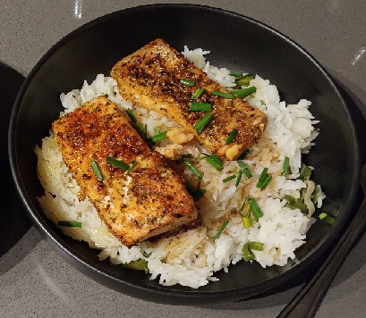

One of my favorite recipes: Teriyaki Salmon
This is a recipe I have found and adapted from Simply Home Cooked.

Teriyaki Salmon
Photo by Rachel Sadler
Recipe
| Ingredient |
Quantity |
| Brown sugar |
1/2 cup |
| Garlic |
1 Tbsp minced |
| Red pepper flakes |
1 tsp |
| Soy sauce |
1/2 cup |
| Teriyaki sauce |
1/2 cup |
| Olive oil |
2 tsp |
| Green onions |
1/2 cup chopped |
| Corn starch |
1 Tbsp |
| Salmon |
4 fillets |
Steps
- In a bowl, combine brown sugar, garlic, soy sauce, teriyaki sauce, and red pepper flakes. Set aside 1/2 cup in a small sauce pan.
- In the bowl add the olive oil and chopped green onion.
- Place the salmon fillets in a container with a lid and pour the bowl with the marinade into the container. Put the lid on and store in the fridge for 30 minutes.
- Mix the 1 Tbsp of corn starch with 1 Tbsp of water in a small bowl. Once this has combined, add it to the 1/2 cup of marinade in the small sauce pan. Cook on medium-low heat, stirring contantly, until it begins to thicken into a glaze.
- After the salmon has been marinating for 30 minutes, cook the salmon in an air fryer at 400 degree fahrenheit for 8 minutes.
- When the salmon is done, serve with glaze and enjoy!